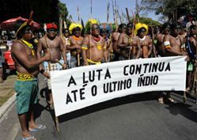
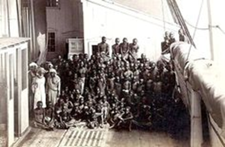
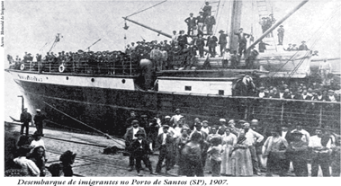
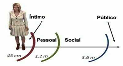

PROPAGAND’À GLOBALIZAÇÃO ¡!¡ NA ¿ Y ? DA PANDEMI🐕AU CULTURAL 🖕O😼U🖕 DEMOCRACIA D’ACULTURAÇÃO ¡!¡ Nu 🩲 início éramos abióticos ♫ por ½ da energia y da diversidade n’art ♪ d’2ecomposição ♪ somos da luz biótica ♪ até u fim desses meteoros🤡sapiens ¡¿¡ Os animais ñ são seres irracionais – FRANS D WAAL a coisa pública ñ aparelhada ♫ por zumbis🧟políticos aculturados 🥶 eurocentri💩cus 🥶 q c apropriaram y n’ameaça bélic☠acultural🤡avançam p/ conkistar à exportação da pp ignorância 💣 por ½s y fins 🗳 democráticus💩eleitorais🤡Diplomados👹candidatos
TSE💩TREs normatizam as vontades partidárias catekizadoras p/ direitos às “funções¿💰?públicas” dus cargora 🚽💩🚽 privatizados ♪ em detrimento dus deveres y responsabilidades du gestor🌲🍀🌲público c/ ¿legal? financiamento💰secreto às vistas👀grossas 💰IDP💸 vistas 👀STF💩TSE eleição diploma u então gestor🕵️privatizado c/ crime d imunidade p/ abusus na indicação aus 🐕 3 podres💩poderes💰privatizados c/ aparências 🐒 públicas🤑publicitárias💱democráticas verossimilhança💲 negociata💲 polarização🖕política da ignorância🤡intelectual 💸 circulando 💸 em ré🧣volta au 🐕 pp QI🖕😼🖕 relações💩partidárias👹coligárkik política👺👹🤡partidária🖕democracia🕵️secreta da república 🍌 bancadas d orçamentos p/ kambadas 🍌 d c💰rrupt💰s ⚔ Há ¿Educracia? Constituinte📗Popular c/ Biocracia das relações racionais interespecíficas d ‘cooperacias’ locais “Bioglobalização” ♪ Yáhh !!! miau intransitiva Biocracia 😼 na democracia🤑econômica transitiva :( direta p/ privatização dus predicadus à cidadania du sujeito :y indireta nus 🩲 anúncius 🖕 au 🐕 multitotalitarismo empresariânal 💩 corp🤑raciânal repetir joseph👹goebbels vomitando acúmul🤮 d 🙊 ignorâncias🙈midiáticas 🙉 comerciais deliberativas das desigualdades socioambientais 🤮 “bem” como fomeação à invasão antro
ORIGINÁRIOS 🏹 MACUNAÍMAS praticantes naturais da Biocracia c/ sinestésicas ♫ características socioambientais dus 5 sentidos integrados às origens y culturas ativas ♪ interespecíficas naturais à paralinguagen👅amazônica milenar 🎶 Etnias Nativas manejam trocas d milenares práticas d cultivos integrados🌲🍀🌲coletiva🧠mente ♪ criando ♫ y mantendo nossas diversidades d biomas y culturas ♫ em nossa proxêmica Rainha Amazônica 💃 forjada 🧘 na 🧜 participação coletiva d vegetais y animais bióticos conscientes 👤 y/o 🌽 inconscientes d suas funções 🌴 y 🌱 participação cooperativa p/ contornar as adversidades na abundancia y escassez impostas 💧 por nossos recursos abióticos às espécimiaus😸originais ♫ donde 🌨 assim ♫ Desenvolvemus nossas culturas d agrobiomas ♪ em comum c/ nossas civilizações d biomas 🎶 O Velho y o Novo na Arkeologia Amazônica –EDUARDO NEVES ♪ o concreto consciente ⚔
o abstrato inconsciente ♫ o denso prático ⚔ o esparso teórico ♫ a cultura brancu 💩 grecu 😈 romana bélicu 💩 eurocêntricanã urbano ♫ rural ⚔ a biocultura planetária cultura🌲🍀🌲prática dus nativos das américas 💪😼👉 tundra ♪ taiga ♫ florestas ♪ temperadas ♫ equatorial ♫ tropicais ♫ savanas ♪ pradarias ♫ caatinga ♪ desertos 🎶
o mérito individual dàkeles q carregam em si ♪ toda sabedoria cultural d seus ancestrais é ♫ O caráter educativo du movimento indígena brasileiro – DANIEL MUNDURUKU ♪ euroego 💩 brancu c/ seus excessus 💥⚡️🔥 d linguagem propriedades escrita são ☠️@👻 ruídos 🌪 ruindo y
ressignificando 🤑 apropriações material y cultural exteriores à neomonarkia 👑 neorepublicana neocolônia 💧 grecu 😈 romana d pdç y controle💩bélicu p/ impor supremacia de💲💲a 💪👺ne’ordem 🖕🖕🖕 privatizar p/ conkistar 🧨 neoinvasores 🙈🙉🙊 à concessão pública d comunicações à midiotas 👺👹🤡 empresariais 🙈🙉🙊 publicitários y criminosa parcialidade c/ desinformação à interesses 💩 privados 💩 privatizand’ 🖕🖕🖕 u exercício da cidadania 🎶 nu 🩲 cumprimento ♫ du interesse público d’ontem ♫ d’oje d’agora ;) Ñ t/ preço 😏 O amanhã ñ está à venda ♪ né – AILTON KRENAK ♪ propagandas 🙈🙉🙊publicitárias são disparadas deliberadamente s/ autorização d instituição judiciária 😏 corregedora dus interesses ocultos criminosos difundindu🖕conteúdo🖕publicitário d dogmáticus💩interesse🚽privados econômicos violentos pornográficos fixado nua👙liberdade💸democrática publicitária d infus manipulações da economia pública pelada👙privada🚽


Nossos lugares d’intercidadanias ¿ou? d falas preto¿?preto ⚔ preto¿?branco ⚔ branco¿?branco y ¿seus? frutos índio¿⚔?branco¿⚔?preto – DJAMILA RIBERO ♪ Há kilombola ??? Úrsula 😏 a escrava 😏 Hino da libertação dus escravos 😏 seus Cantos à beira♪mar – MARIA FIRMINA ♪ Pedaços d Fome 😏 Meu sonho é escrever - Contos inéditos y outros escritos 😕 nu 4º d Despejo 😏 Diário d uma Favelada 🙂 na Casa d Alvenaria 😏 Diário d uma ex♪Favelada – CAROLINA JESUS ♪ Racismo y Sexismo na Cultura Brasileira 😏 Por um Feminismo Afro♪Latin♪Amerikan 😏 A Mulher Negra na Sociedade Brasileira – LELIA GONZALES ♪ formas du gênero 👙 nu contexto 😏 Becos da Memória 😏 Poemas da recordação y outros movimentos 😏 Brasil♪África – CONCEIÇÃO EVARISTO ♪ O Alegre Canto da Perdiz Ngoma Yethu
😏 O curandeiro y o Novo Testamento Maputo 😏 O Canto dus Escravizados – PAULINA CHIZIANE ♪ Vida d Negro ♫ é difícil ♫ é difícil como o Q 🎶 Retir’aram’antes à diáspor’africana – DORIVAL CAYMMI
♪ Poema Comentário Du Portador* *Enviar p/ indiocinzento@gmail.com * * * * * * * * * * * * * * * * * * * * * * * * *♪
♪ Arial Narrow 11 ♪
♪ 640 caracteres ♪
♪ ♪
♪ ♪
♪_ _ _ _ _ _ _ _ _ _ _ _ _ _ _ _ _ _ _ _ _ _ _ _ _ _ _ _ _ _ _ _ _ _ _ _ _ _ _ _ _ _ _ _ _ _ _ _ _ _ _ _ _ _ _ _ _ _ _♪
Cilada das elites 😒 monarkica 🖕 golpe maioridade PARTIDO LIBERAL 😒 café c/ leite 🖕 encomenda ¿tela? ¡cena! da representação d independência na política d ¿Q? proclamação república ??? – PEDRO AMÉRICO 💪😼👉 kombat à escravidão intelectual c/ EDUCAÇÃO 📚🤓📚 !!! implementada p/ todos 😏 Ñ à manipulação du senso comum ♫ é crime !!! Descolonização du pensamento europeu inútil 😏 O q é ideologia – MARILENA CHAUI ♪ O privilegio da servidão o novo proletariado d serviços na era digital Della caverna – RICARDO ANTUNES ♪ Subcidadania y Naturalização da Desigualdade – JESSÉ SOUZA ♪ Les Damnés d la Terre – FRANTZ FANON ♪ A Onça Castanha y a Ilha Brasil :) uma reflexão sobre a cultura
brasileira – ARIANO SUASSUNA ♪ Movimento d Alfabetização d Jovens y Adultos ;) Método – PAULO
FREIRE ♪ T ou ñ T ??? Filosofia Cinza - A Melancolia y o Corpo nas Dobras da Escrita – MARCIA TIBURI 🎶
O ouro nada + é du q uma poeira brilhante na lama ♪ E nu 🩲 entanto us brancus são capazes d matar por causa ¡¡¡ disso !!! Será ainda matarão muitos d nós dessa forma? E ♪ dp disso ♪ as suas fumaças d epidemia vão devorar todos os q sobrarem ♪ até o último ??? Eles kerem mm acabar c/ a gente ? Sim DAVI c/ certeza na ganância deles insaciável coisa mal resolvidas dus brancus💩maus👈😼👉Na prática 🤦 à paralinguagem ♪ em leitura diagnóstica 😏 havendo sintoma d “democracia” ??? é partidária !!! Qt + leis y regulamentações inúteis t/ importância 😒 + ladrões y bandidos há 😏 + Akeles q sabem são abstenções 😒 Àkeles q votam 😒 ñ sabem u q faz 🎶 miau😸feat mestre – LAO TSÉ ♪ sociedade du
cansaço 😒 escravos zumbis d “midiotas” publicidades divididas entr’empatias :(reprimidas): dus sentidos à conkistar y completar ¿pq? 😒 Há mecânica narcisista d dominação – BYUNG CHUL HAN ♪ O poder d morrer y deixar viver foi substituído pelo thánatopoder q é bioviver y deixar morrer FOUCAULT ♪ Sortir d la grande nuit 😏 Essai sur l'Afrique décolonisée – ACHILE MBEMBE ♪ "Nenhum aprendizado verdadeiro s/ armas y nenhumas armas s/ aprendizado" – HAYASHI RAZAN tét a tét comunicação orgânica 😏 reflexão du 🤪 nossu 😨 eu 😜 íntimo pessoal diverso ⚔ padrão geral d comunicação eletrônica 😒 análise d dados 🎲 inconscientes impressos na mídia du indivíduo social 🤩 q demanda
por 🤑 seu coletivo ;(
antes :(midiota🤥mente): cooptado à repetidos “goebbels” c/ trabalhos d programação p/ todos os sentidos :( agora ): n’audiência 🙈🙉🙊 pública propaganda🖕banalizada nu 🩲 🤡 🩲 mal – HANNAH ARENDT ♪ corporações 🐒 publicitárias c/ vigilância – GEORGE“ORWELLIANA” epistêmica 😵 da população d manobra d natureza proxêmica da comunicação – EDWARD HALL ♪ 😸 maiêutica – SÓCRATES ♪ “O ½ y a mensagem” – MARSHALL MCLUHAN